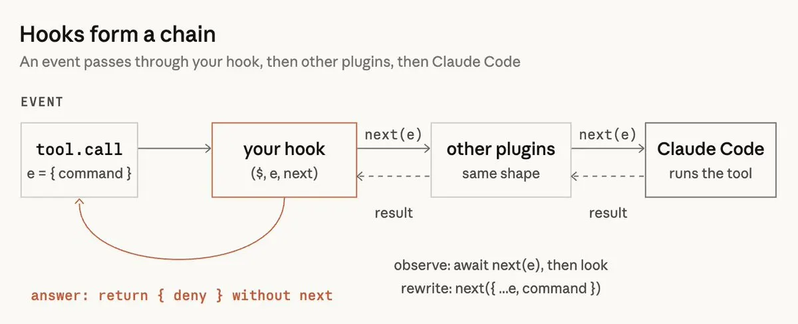

Claude Code Mods：事件是接縫，三個動詞就能改寫行為
導讀原文：X Article〈Getting started with Claude Code Mods〉——入門教學，作者自述「mods 幾週前上線，這篇是為了讓大家好上手」；技術定義只有一句：hooks 綁進 plugin
mods 是把 hook 綁進 plugin：一個 JS／TS 檔在 session 裡載入一次，自帶狀態與介面，於事件上觀察、改寫，或直接代答。

hook 看到的是整個 session 的事件：工具呼叫、送出 prompt、回合開始與結束、session 起訖、slash command 執行，以及任何一段介面的每次渲染。
事件進到 hook 後只有三種結局。原文建議用這三個動詞下指令：「拒絕這類指令」是代答，「每回合後拍快照」是觀察。
一個 hook 挑一種；挑錯，行為就整個走鐘
本站重繪；原文以三個項目並列說明，未給順序或優先級。
這三個動詞其實是責任分工：觀察不動事件，最安全；改寫會影響後面所有 hook，疊加時最難推理；代答等於接管預設行為，出錯就是災難。
（編輯觀點：先寫一個觀察型 mod，把事件序列印出來，再決定要不要動手改。原文直接跳到示範，少了這一步暖身。）
與 settings hook 的差別：有沒有狀態與介面
兩者都掛在事件上，差別在生命週期。原文的對照很短，但決定了你能做什麼。
每次事件跑一個 shell 指令。無狀態，跑完就結束，看不到介面，也無法回頭叫 Claude Code 做事。
載入 session 一次，自帶狀態與 UI，隨事件更新。可回呼 Claude Code：開 pane、spawn 行程、註冊 slash command 或模型可呼叫的工具。
本站重繪；原文以段落敘述差異，未給此左右對照。
這也是 Anthropic 自己吃狗糧的地方：AGENTS.md 支援與 /diff pane 就是用 mods 實作，程式碼與測試放在 claude-code repo 的 mods/ 目錄。
作者自述最喜歡的一點，是 mod 不必先學 API：直接描述你要看到什麼，Claude 寫檔、你核准、開熱重載，回合結束就出現。
原文的示範 mod 叫 Token Weather——提示列上方一行天氣圖示加 context 使用百分比，加上最近幾回合的迷你折線與本回合新增的 token 數。
這種做法有兩個實務細節。一，這樣做出來的 mod 只活在當前 session，資料夾之後會被清掉——要留下來，得先從 ~/.claude/dev-mods/<session-id>/ 複製出來，再當一般 plugin 安裝。
二，介面若長不出來，跑 claude --debug 找 hook returned a tree that does not validate 那一行，通常是渲染樹沒通過驗證。
四個邊界：不沙箱、band 只有一條、不是防火牆、API 會變
| 邊界 | 原文怎麼說 | 實務意義 |
|---|---|---|
| 不沙箱 | mods 在你本機以你的權限執行，可讀檔案與 secrets、起行程、發網路請求、代為核准工具呼叫 | 等於把機器的一部分交出去；作者不是 Anthropic，安裝前先跑 validate、讀原始碼 |
| band 單一 | 同時只有一個 mod 能用提示列上方那條；被佔用時按鈕可能不出現，指令 10 分鐘後被拒 | 兩個 mod 疊起來就是「卡住」：你以為安全網還在，其實它沒跑 |
| 不是防火牆 | Blast Radius 讀指令文字，$(…)、alias、包著 rm 的腳本都會穿過去；要硬擋請用權限規則 | 只能當覆核提示，不是授權機制；硬性禁止得寫進 permission rules |
| API 會變 | 改版之間 API 可能變動；載入時會把型別宣告寫進 .claude-plugin/types/ | 升級前先讀 types/ 對一次，別假設舊 mod 還合 |
→ 可橫向滑動
原文最具體的安全動作是這一步：安裝前跑 claude plugin validate 看它掛了哪些事件、呼叫了什麼。
原文自己把 Blast Radius 定位得很清楚：它是安全網，不是真的防火牆。它攔的是 Bash 裡看起來危險的呼叫——rm -rf、git reset --hard、git clean、force push、資料庫 migration——先跑 dry run 收集報告，再開 pane 等你按 1 或 2，或按 Esc 取消。
另一個常被略過的限制在排版：終端夠寬時 pane 靠在側邊，不夠寬就畫在提示上方，而提示上方那條是共用的。所以它不是「裝了就有保護」，而是「裝了、而且它是唯一佔用 band 的那個 mod」才有。
原文未給 Blast Radius 的寬度門檻；其示意圖在 120 欄時仍畫在提示上方（該圖本站未收錄）。
（編輯觀點：band 這一條是整篇最容易被低估的設計債——兩個好用的 mod 撞在一起，壞掉的是安全網。）
Replay Theater 走另一條路：只監看 Edit 與 Write，從不阻擋。回合結束後按 /replay（或 ctrl+x、Tab、r）看每個編輯的 diff 與步驟編號，subagent 的編輯併進主回合的重播。全螢幕時 pane 靠在右側，80 欄時改為提示上方內嵌。
社群已經長出一批原廠想不到的用法：Stack viewer（Daniel Avila）的 /stack 把 session 裡的 skills、subagents、commands、hooks、MCP servers、plugins 一次列完；cc-stretch（pro-vi）把長文改成「先短回、點了再展開」；Mindful Claude（halluton）在你等它工作時帶你深呼吸；RemCTL（Federico Viticci）把 Apple Reminders 接到提示列上方。
發布與安裝沿用 plugin 那套：repo 加一個 marketplace 檔就能上架，三行指令裝起來——/plugin marketplace add、/plugin install 名稱@marketplace、必要時 /reload-plugins。
閱讀前提。作者是 Addy Osmani（Google Chrome 團隊，個人帳號發文），非 Anthropic 官方文件；文中「用起來如何」多屬個人體驗，功能行為以 claude-code 官方文件為準。原文自承 mods 上線僅「幾週」，API 仍在變動。
帶走三件事
先挑動詞再寫程式。觀察、改寫、代答——選錯，行為就整個歪掉。
band 是稀缺資源。要放提示列上方，就得假設別人也在搶。
便利與權限同時到貨。mods 不沙箱，安裝前讀原始碼不是客套話。
同一主題的其他館藏
導讀為本站編輯內容（AI 摘解自原文與館藏重點，非官方文件）；引述語句出自原文，圖解與小標為編輯整理。圖解 A、B 為本站重繪。內容經對照原文的獨立事實審查後發布。